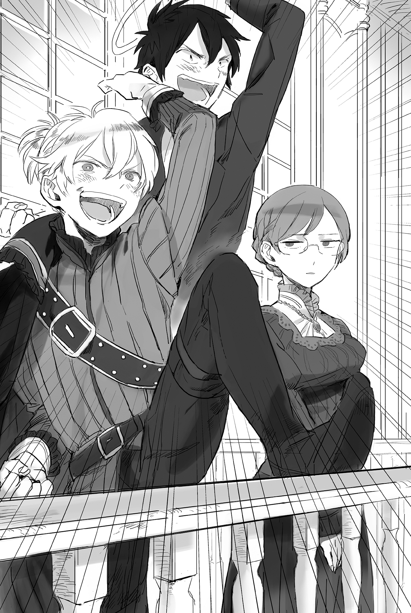
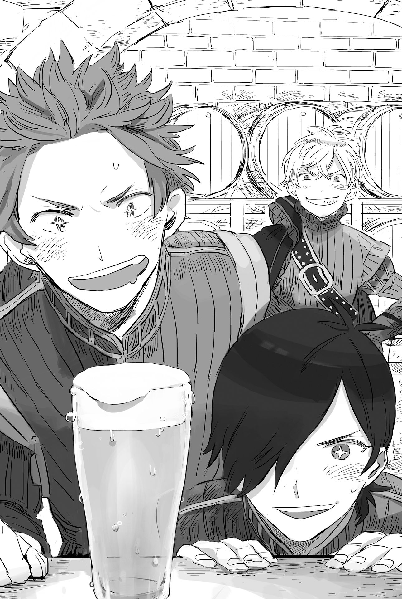

Chapter 2 – The Dawn of Antrim
.
Part 1
『I’M STOPPING HOLDING BACK NOW! JO○OOOOOOOOOO!』(TN: A Jojo reference)
Masaharu leaned forward from the castle’s balcony and yelled as his soul commanded him.
Even though he had surrendered the main character seat of this life to Baldr, he couldn’t go against his own nature.
「My lord, what in the world are you screaming with those unknown words?」
Agatha was sending him a cold gaze with her hands on her waist, her expression one of total exasperation.
It was only Seyruun and Tyros, Baldr’s childhood friends, who were used to Baldr’s eccentricity. Even his schoolmates, Brooks and Nelson, had their eyes wide open in surprise.
But, as a man, anyone would have dreamed to be the lord of a country and a castle at least once since they were born.
Baldr wasn’t an exception to that. His excitement was reaching the peak seeing the land of Antrim spreading below him.
Viscount Antrim’s territory──it was composed of a gentle plateau up until the mountain range Morgan to the north, with a fertile plain around the area of Potomac River which was flowing in the southern region.
This area was also greatly protruding from Mauricia Kingdom into Haurelia Kingdom.
This area would be the first place to be attacked if war broke out. Because of that, this area had a bad reputation as Mauricia’s appendicitis.
Due to that geopolitical destiny, it was easy for Antrim to be placed at the front line against Haurelia Kingdom. It was a land with a high chance of getting dragged into war, just like Cornelius territory.

Even so, the northern part was surrounded by steep mountains and the southern part had a river with a lot of water. Even if the river wasn’t that large, it still acted as a natural border, so it wasn’t by any means defenseless.
Within this land, the eastern part was relatively easy to attack, so a castle was constructed there to stand in the enemy’s way. That was the Gawain Castle, where Baldr is right now.
Unfortunately, this castle wasn’t too big. As could be seen from how the previous Viscount Antrim and his whole house were annihilated, its defensive power was low.
Although that was only the case if one were following the conventional way of fighting.
The vision to reconstruct the defensive structure within this territory with Gawain Castle as the center was already taking shape within Baldr.
「──Just come if you want! I’ll teach you a new war that you’ve never seen before!」
He wouldn’t allow invaders to rudely step into his new territory as they pleased.
In order to protect his first territory, Baldr decided to liberate the knowledge cheat that he had been holding back until now.
.
Part 2
「──My lord, we have been waiting.」
This young man, Brandon Anderson(ブランドン・アンダーソン), was a local who was employed by the previous magistrate as an administrative official. He was shocked inside his heart when he learned that the new feudal lord would be a young boy with a handsome doll-like look.
Brandon had been raised in Antrim since he was born. He was educated by his uncle who retired from the capital and grew to become a capable administrative official. Many times he had gnashed his teeth at how small his authority was.
Behind his gentle face that he inherited from his father, he had been accumulating dark fury toward the previous magistrates who didn’t have Antrim’s best interest in their mind.
When the previous magistrate went back to the capital as though there was a demon chasing behind him, the majority of the bureaucrats followed him to run away from this frontline remote region. In order to protect the livelihood of his birthplace, Brandon took the role of managing the administrative officials who voluntarily stayed behind.
The number of oddballs who refused to return to the capital was of course few. Only around thirty percent of the officials centered around the local employees were staying behind to be Baldr’s subordinates.
Because of that, there was a serious lack of personnel and around fifty percent of Antrim’s governance service had already stopped functioning.
「I am grateful for the endeavor of everyone here. I hope all of you will continue to lend your strength for Antrim’s sake.」
It was a happy miscalculation for Baldr that he was able to obtain the locally employed bureaucrats who loved their birthplace starting from Brandon as his vassals.
If this place was just a normal territory of the royal family, the local employers would only occupy the lowest ranked occupation while the higher ranked occupations would be filled with people from the capital. In that case, Baldr would be forced to organize the bureaucracy from the beginning.
This was a rare case where Antrim’s unpopularity was bringing a fortunate result for Baldr instead.
Baldr asked Brandon.
「What problem is our biggest priority right now?」
「We urgently need some troops to maintain the public order. I never thought that the previous magistrate would also withdraw the border guards. At present, we will be hard pressed to even deal with a small scale bandit group.」
「──That king, does he really have the motivation to seriously defend this place?」
Perhaps that king actually wanted the enemy to attack this place instead.
If it was that scheming king, then it wouldn’t be strange at all for him to have such a plan.
Either way, at this rate Antrim would turn into a delicious prey for bandits who hungered for blood.
「Zirco, lead a platoon to patrol the north mountainous region. Brooks and Nelson, take care of maintaining the public order around the castle town. Brandon, I want you to start recruiting soldiers within Antrim. Tell the population, it won’t be a dream for them to become a knight depending on their work.」
「Leave it to me!」
Zirco who was liberated from the threat of Maggot showed a bright smile without any burden. She accepted the order while clapping her chest.
The platoon that she was leading was formed from elite former mercenaries. They were the trump card that was under Baldr’s direct command.
To put it another way, they were existences that swore loyalty to Baldr personally. They didn’t swear their loyalty to the king.
They were troops that Baldr could rely on in case his interest was in opposition to the king.
「Finally it’s a work that is really like work.」
Brooks and Nelson had been bestowed the rank of knight formally. They were now fully-fledged knights of the kingdom.
Their subordinates were a semi platoon of guards from Cornelius that volunteered to come here including Porco. The number was a bit unreliable to guard the territory of a viscount, but it was enough if it was just for maintaining public order.
However, in total their number didn’t even reach a hundred. Even things that could be protected would become defenseless like this.
Baldr intended to recruit soldiers and also hire mercenaries at the same time in order to secure a battle force of more than a thousand strong at the very least.
「However, the funds within the territory is already hitting rock bottom……」
Brandon informed him of the empty state of the vault with an expression like he had bitten a sour grape.
Originally with the king’s command, all the budgets that hadn’t been used up should be handed over to Baldr. However, the previous magistrate falsified the date records to make it look like all the budgets had been used up before the king issued his command.
「There isn’t any problem at all with our funds.」
It was Agatha who replied to Brandon in Baldr’s place.
Agatha was given the authority for the matters of financial affairs as the head secretary. She explained about the outlandish capital strength that Baldr possessed.
「Even just my lord’s personal assets are worth around tens of thousands of gold coins. There is also a grant from his majesty the king that is no less than thirty thousand gold coins. In addition, there is also a loan of a hundred thousand gold coins from Dowding Company, so we won’t be lacking in fund for a territory of this scale.」
「W-why is the name of Dowding Company showing up there? Furthermore, they are loaning a hundred thousand gold coins!?」
Brandon yelled when he heard this unrealistic talk that was impossible to believe.
An amount of money like a hundred thousand gold coins would become a terrifying economic burden, where he was already scared to imagine just how they would even pay the interest.
Brandon was doubting Baldr’s sanity, whether this new lord was really in his right mind or not.
「Aa……I understand how you feel but, my lord is completely sane. Sometimes he also makes me want to doubt common sense but──really, what does common sense actually mean?」
Agatha smiled wryly with an awkward expression.
After accompanying Baldr, she who was managing the Mileton House by herself in the past was feeling like she was just a tiny existence.
To say nothing of Brandon who didn’t know anything about Baldr’s disposition and achievements, it was only natural for him to feel very uneasy about the future.
「You might be unable to believe it, but my lord’s fiancée is the president of Savaran Company that has formed an equal partnership with Dowding Company. Savaran Company might still be an unknown in the remote region, but it’s a famous company right now even in the capital.」
──Although the company only became famous within these several years after they joined hands with Baldr.
Sheesh , Agatha shook her head with a tired look.
Brandon must be going through the same thing like her right now. His common sense that he had cultivated since he was born was smashed to pieces. Most likely he would need a bit more time until he was able to accept the situation.
「What is terrifying is that a hundred thousand gold coins is just a moving home present for them. If they seriously sense a chance for profitable business, they will immediately increase that amount of money by a single digit.」
Agatha hadn’t spent that long working for Baldr, but she had been made to realize that all this time she was just a frog in the well.
Especially in the matter of the commoner’s financial strength. It far surpassed what the nobles thought.
Rather, the commoners had been supporting the kingdom’s economy since a long time ago. In the end, how many nobles were actually aware of this fact?
「I’m warning you, you will only feel like an idiot if you think about it too deeply. Simply accept it as a fact.」
「──From the way Agatha talks, it sounds like I’m some kind of outrageous monster.」
Baldr frowned as though to say he was upset other people were holding such an opinion about himself. Agatha sighed and pointed with her index finger.
「Is my lord saying that I’m wrong? How laughable. Please give me back my chaste maiden self!」
Painful gazes suddenly gathered on Baldr from the surrounding. He defended himself with a face that looked like he wanted to cry.
「Please don’t use such misleading words! I have never laid a hand on Agatha, even by mistake!」
「Especially to a woman like you who has the same smell like my mother!」 Baldr didn’t go as far as saying that, but his utmost refusal was still conveyed.
Agatha felt a bit complicated because it made her feel like her charm as a woman was denied.
.
Part 3
「Now then……I wonder how goes the preparation.」
The location was one hour away from Gawain Castle by horse. It was an open space of the villa owned by the previous Viscount Antrim.
The size of the open space was around 30000 square meters. It was mostly a vacant land with only rubble due to the place being burned down in the war.
In this place, several dozen craftsmen who were gathered here by Baldr’s order were already starting to construct several buildings from wood.
Agatha was puzzled that buildings this big were constructed here even though they didn’t look like mansions or anything. She asked Baldr who seemed to be in a good mood beside her.
「What are they building over here?」
In the opinion of Agatha who was responsible for Antrim’s financial affairs, the current Antrim was like a bucket with a hole in its bottom.
Although for now they had money in abundance, the majority of those funds were from loans. If there was no obvious improvement that was clear to see quickly, Antrim would ruin itself due to the loans sooner or later.
Agatha was vaguely confident that most likely these buildings were Baldr’s trump card for the financial reform in Antrim.
「I’m making a workshop……the problem will be in circulating them to the market. But Dowding Company is eager to get involved with that, so I think we will manage somehow.」
「This place is a workshop? But it will be difficult to call craftsmen to come to Antrim.」
Certainly she didn’t deny that Baldr was a capable inventor.
However, people in the occupation of craftsmen were few in number even in the whole kingdom. They were also famous for being prideful.
It didn’t matter how much money they offered, no craftsman would want to come to Antrim where it wouldn’t be strange if war broke out anytime.
「No? I have the device constructed in Cornelius already, and recruiting the local aunties will be enough for the workers. Well, I also don’t plan to repeat the tragedy of female workers like Japan in the past though.」
Agatha felt her stomach turn heavy as though she had just swallowed a rock.
She felt like this kind of stomachache had become chronic for her since she became Baldr’s head secretary.
She decided to brew a branch of katsura tree that was good for the stomach when they returned to the castle. In the meanwhile, Agatha questioned Baldr.
「──I got a very bad premonition for some reason. What is it? That device that my lord mentioned……」
「A prototype has just arrived, want to take a look?」
「…..I’ll look.」
Agatha resolved herself after hesitating for a while.
She had a fastidious personality that wouldn’t feel satisfied unless she saw everything with her own eyes. It gave a push to Agatha’s back.
When she was called as a talented girl when she was still a child and when she managed Mileton House, she was even called a cold-blooded woman. Because of that, she was hated by her big brother and even her little brother considered her a nuisance. She was isolated among her family members.
But her true nature was a moralist with common sense.
She simply had a discerning eye and an abundant amount of knowledge, but she wasn’t as strong-minded or cold blooded like society evaluated her as (she was a sadist though).
Agatha followed behind Baldr and stepped inside the shabby storeroom that was built beside the workshop, which was in the middle of construction.
「──What is this thing?」
What entered Agatha’s sight was a completely ordinary weaving device.
A man was crouching in front of that weaving device. He was looking delighted while fiddling with a strangely shaped shuttle.
「Boss Karim, how’s it going? Is there any problem?」
The mouth of the small statured man named Karim that was covered by a beard broke into a wide smile and he laughed heartily.
「Ou! There isn’t any problem so far. Just leave the assembling to me!」
「Sorry to trouble you like this. I put a large burden on you, boss……」
「It’s the greatest delight of my life as a man withsimply being able to get involved in this project! Don’t mind it.」
Karim laughed proudly. He thanked Gothe once more for introducing him to Baldr.
Karim was originally a craftsman from Cornelius. With the introduction from the craftsman Gothe, he worked together with Baldr since last year in developing a new weaving device.
Karim still clearly remembered the surprise he felt when listening to Baldr’s novel idea, like it had only happened yesterday.
And then the completed weaving device was something magnificent that was clearly ahead of this era.
Perhaps Karim’s name would be engraved into the history of Aurelia Continent together with Baldr Cornelius for a long time to come.
「You two are getting really excited but……what is this thing called?」
Karim immediately scowled in displease at Agatha’s puzzled words. He stood up with the desire to explain just how wonderful this device was like the craftsman he was.
「Have you ever seen any normal weaving device, my lady?」
「Yes, my family’s territory has a skilled tailor by chance. Though of course, I don’t really know about the device in detail.」
「The best thing about this new weaving device is how one person now can easily operate the shuttles. With this, the weaving speed will increase drastically.」
Karim said that while starting to operate the shuttles.
Strings of various colors were controlled vertically and horizontally by multiple shuttles. Agatha was dumbfounded and she couldn’t close her gaping open mouth.
「──My lord.」
「Yes-?」
Agatha’s expression looked like she was going to break down crying at any moment. Baldr was taken aback seeing that and replied with a stupid sounding voice.
Agatha was always looking expressionless or even smiling fearlessly. This was Baldr’s first time seeing her making this kind of expression.
「What does my lord want me to do? Is my lord telling me to become self-reliant on myself? Or perhaps my lord wants me to unite Aurelia continent into one? Or else, you also want to put me into your harem? That’s what you want, isn’t it!?」
Agatha was deranged and spewed out incomprehensible words. Baldr who was taken aback by it hurriedly grabbed Agatha’s shoulders to calm her down.
「Agatha, I’m begging you to get a hold of yourself. I’m not plotting to conquer the world or anything, I’m also not planning to add Agatha into harem.」
「What is it you’re hoping for by showing something like this to me? Do you want to steal even the virginity of an old maid like me? That’s your aim, isn’t it!?」
「Wait wait! What kind of person do you think I am!」
Actually, Agatha Mileton had a very brittle personality when facing a situation that surpassed her thinking capacity.
An hour was needed until Agatha who was spewing out words that shouldn’t be said rapid fire finally recovered her composure.
.
Agatha, who drank water and calmed down, was glaring at Baldr with a cold gaze while her cheeks were still slightly red.
「Please forget my unsightly act just now. If you don’t, I will curse my lord for my whole life.」
「I swear to god I’ll completely forget it.」
Even so, Agatha felt astonished once more.
She wondered if this person really comprehended just what he had done to her.
The true identity of the parts that were incorporated into the weaving device that Agatha saw was called a flying shuttle on Earth.
This shuttle was invented by John Kay in the eighteenth century. It drew a line from the traditional shuttle and made it drastically easier to weave string horizontally between the vertical strings. It was the driving force behind the industrial revolution that happened after that.
As a result of productivity increasing too much, the traditional weavers were out of work, a serious shortage of string occurred, and it also became the main cause of the invention of spinning jenny in the future.
If this shuttle spread uncontrollably, the textile industry in every country, not just in Mauricia Kingdom, would be pressured and it might even become a cause of war.
It was because of her intelligence that could even predict until that far that Agatha fell into derangement just now without intending it.
「──It’s too dangerous. If the existence of this thing become known, Haurelia Kingdom might come invading starting tomorrow, you know?」
Agatha’s anxiety wasn’t excessive by any means.
Even John Kay who was the original inventor of the flying shuttle was also extremely hated by the people in the same trade. He was driven to bankruptcy and in the end he lost all his rights and was banished from his homeland.
A technology that advanced too much would result in great damage sometimes.
If they were careless, they would turn the textile manufacturing people within the country into enemies and even the royal family of Mauricia might regard the technology as dangerous and target them.
「It will be fine if we only have one workshop and set the price high. Of course, the basic premise for it is keeping a tight lid on the secret.」
In Baldr’s prediction, as long as the technology wasn’t adopted nationally with the support of the country, the produced amount from Antrim would only give a minimal effect to the market on the whole.
That was why the weaving device was added with the function of weaving in many colors and they planned to set the selling price higher than the current market price.
It might be difficult to reach the target if Baldr was doing this alone, but now he had Dowding Company that ruled the market within the country at his side. He also had connections with the Sanjuan Kingdom for transporting the product to other countries by sea.
「First, we’re going to secure more funds and influences……although our greatest priority is naturally the defense of our territory.」
There would be no reason for Haurelia Kingdom to invade Antrim as long as Antrim was still undeveloped and weak.
Naturally, Baldr was also intending to meet any attempt at invasion with the full force of his knowledge cheat in order to protect his territory.
.
Part 4
One of the staple domestic affairs cheat was the production of alcohol.
When using this kind of cheat, most of the time it would be about producing distilled liquor or refined sake, but Baldr’s fixation was turned towards something else.
His fixation was towards beer.
Masaharu had also researched how to create whisky and brandy in his previous life, but the way to create beer was the one that he researched the most.
Of course, underage people were forbidden to drink alcohol in Japan, but there was no way a high school student who was at an age when they wanted to act like an adult wouldn’t be tempted to lay their hand on alcohol.
Masaharu also was one of the youths who had a taste of beer because of his big brother’s influence.
The alcohol that was popular among the commoners in Mauricia Kingdom was ale style beer.
Wine was categorized among the high class alcohol. Beekeeping hadn’t spread in this world. To use extremely precious honey to create something like mead would only result in the highest class of alcohol in this world.
In contrast the history of ale style beer was old. It had the advantage of being producible anywhere because the fermentation could be done at room temperature, so it was well-liked among the commoners.
With ale, yeast was fermented at the clear top of the liquid. This method was called surface fermentation. In most cases the resulting ale would have light carbonation and bitterness.
Another way was bottom fermentation where the yeast was made to precipitate in a place with relatively low temperature. The beer created with this method was lager beer.
The beer in this lager style that was popular was Pilsner. It could be said that most of the beers that were habitually drunk in modern Japan were this Pilsner style.
The origin of this Pilsner beer was Pilsen city in Czech. It was easy to gulp down through the throat with a sharp taste. This style of beer occupied nearly seventy percent of Earth’s share.
Halfway up mountain range Morgan that was towering high at the north of Antrim, there was a former mining site with its entrance gaping open. That chilly underground space was now turned into a test site for reproducing this Pilsner style beer.
.
「Ou, young master. I’m bringing a lot with me including the experimental products too!」
A horse carriage arrived at Gawain Castle with various types of alcohol casks loaded on it.
「Stop calling me young master, Guiness-jiisan.」
This cackling old man with short height and wrinkled face, Guiness Claus(ギュネス・クラウス) was born in a well-established brewery at Antrim.
He had continued making alcohol, mainly ale for dozens of years. Although the brewery was locally famous, there wasn’t really any rival for it here. He was feeling a vague uneasiness from going through his days that were staying constant all the time.
Baldr, who became the new feudal lord here, got in touch with him while he was feeling such things.
「Won’t you try challenging yourself to create beer with a new way?」
He wondered what this ignorant youngster was saying.
It would be a lie if he said that he had no such thinking at first.
However the stimulation from the curiosity that Guiness felt won him over──he got a hunch that a wind was blowing in the world of liquor that hadn’t show any sign of changing during these several hundred years.
Things like Sanjuan’s coconut sake or Gartlake’s fermented mare’s milk were also valued highly as peculiar alcohol, but as expected the position of beer and shochu as the best companion of commoners was unshakable.
If there was a ground-breaking change to the manufacturing method of that beer, it might even be possible that it would influence the whole continent.
Humans couldn’t stop producing alcohol by using grain even in the ancient times when it was far easier to fall into famine. Even when they had to brave the danger of starvation by using their precious food for it, alcohol was a lifelong friend that mankind couldn’t possibly go without.
「Kaaaaah! This is the stuff! You finally brought them, old man!」
Zirco appeared from behind Baldr with her nose twitching in a good mood. Guiness made an exaggerated sigh seeing her.
「What an embarrassing girl. You won’t ever be able to marry if you keep being like that, you know?」
It seemed that Zirco herself was concerned about it. Her movement froze completely and the next moment she puffed out her chest to put on a bold front.
「Ha-ha-ha-! Sorry but, this Zirco has no difficulty in finding a man anytime I want!」
「Even if you have a lot of male mercenaries around you, it’s meaningless if they don’t seek you as a woman.」
「Stay out of my business! Just leave me alone!」
Zirco’s popularity wasn’t bad at all among the mercenaries where it tended to become a male-dominated society.
But till the end that was only in regard of her as a fighting strength or as a mood-maker. There wasn’t a single one among them who wanted to form a relationship with her as man and woman. It was Zirco’s crushing failure in this regard.
Zirco sulked and averted her gaze. Baldr pushed her aside and asked Guiness.
「How is the result?」
「It’s good. The fermenting needs more time, but let’s make an exception today and break open the seal. No worry, this too is one way to enjoy a drink.」
As a matter of fact, Pilsner style had immediately exterminated ale beer since the 19 th century and became the mainstream beer of the world.
Baldr was naturally having large expectations because he knew about that from Masaharu’s knowledge.
Even in a different world, there was no way a human’s passion toward alcoholic drink was that much different.
.
The members who were gathered into the hall had sparkling eyes seeing the many alcohol casks that were placed in front of them.
The limit of the allowable age for drinking alcohol in Mauricia was very low.
In noble families, it was only natural for children to start having a taste of wine as aperitif after turning seven years old.
Because of that, everyone here had great interest in these alcoholic drinks that were made with a new method.
「We can drink as much alcohol as we like for free? Is this a dream……?」
「Brooks……pinch my cheek……ooh! It hurts! This isn’t a dream!」
Brooks and Nelson bumped their fist with a happy face.
「I wonder why men are always being this pointlessly heated up?」
Agatha sent a gaze of absolute zero to the two with her expressionless face that was like an iron mask fixed in place, but Baldr noticed that she actually had swallowed her saliva several times already.
She must be getting impatient to drink the beer already.
She had it really hard maintaining her character as a prim and proper lady.
「……Is it fine for me to also participate?」
Seyruun was exceptionally bewildered among these enthusiastic people.
Seyruun usually would have her work as a servant during dinner, so she didn’t really have a custom to enjoy alcohol.
In the past he once asked his father to have Seyruun try tasting beer, but she didn’t really enjoy the taste at that time.
「My objective this time is also to develop a beer that even Seyruun will find tasty.」
Hop’s bitter taste was the characteristic of beer. Unfortunately, it couldn’t be said as popular among the women.
However beer with a sweet style like cocktails also existed. For example, there was also beer like Berliner Kindle Weisse, a beer that was drunk with gum syrup mixed in.
Beer wasn’t a beverage that wasn’t suited to women by any means.
「For the snack I tried preparing curry wurst (sausage that was covered with curry and ketchup) and eisbein (German dish of pickled ham hock). There is also haggis (traditional Scottish dish made from a sheep’s offal cooked in the animal’s stomach), so eat up without reservation.」
「YOSSHAAAAAAH! Then I’ll dig in without holding back!」
Brooks was going to pour beer into his jockey casually. Baldr punched him from behind wordlessly.
「Ouch! What the hell!?」
「I’ll cool it with magic, so wait a little.」
It was said that the suitable temperature for beer was around 4-6 degree Celsius.
There were various opinions about this, but water’s volume would decrease in proportion to how cold it was. And then when the temperature crossed the limit at four degrees, the volume would increase from there.
It was because of that it was said that the temperature of four degrees was where liquid was the most stable and tasted the most delicious.
But in Mauricia, the taste of drinking beverage cold hadn’t been established. The reaction that Brooks showed was only natural here.
「First fill the jockey until half full with a rapid stream so that the beer will foam. After that wait for a while until the foam settles down. After the large foams with rough texture vanish, pour in the beer once more.」
Baldr poured the amber colored beer into his jockey splendidly to give an example to everyone.
「And then after waiting for the foam to settle down again, pour the beer slowly until the foam rises up to the brim. If the foam spills out from the jockey, that means the foam hasn’t settled down properly.」
「I’m surprised. I can’t believe the foam can stay without spilling out like that.」
Baldr’s foam that he carefully formed through the proper procedure didn’t spill out at all even though it had been rising up until around a centimeter higher from the edge of the jockey.
It was forming the foam correctly like this that was a necessary condition for tasting delicious beer.
「It’s useless just watching it. Let’s have a glass first for now!」
*Gulp-*

This time Baldr’s fist landed on the back of Nelson’s head.
And then Baldr proclaimed severely like a military instructor.
「Never ask for a beer!」
Those were the words of Mr. Michael Jackson, a great scholar and beer critic.
Beer possessed all the qualities of diversity and rarity and excellence. It wasn’t inferior at all against the high class wine or brandy. The meaning of the words above was that it was improper to treat beer lightly by saying things like “let’s have a glass first for now”.
Guiness chided Baldr’s act.
「Well, calm down young master. Or rather, your personality changed too much just now.」
「The matter of alcohol just tickles my chuuni heart!」
Baldr pulled himself together and raised his jockey high in the air while saying to everyone who had filled their jockey.
「Cheers!」
「Cheers!」
He suppressed his desire to drink the beer already and enjoyed the aroma first.
The refreshing citrus fragrance was rising up. It stimulated his stomach whether he wanted it or not.
And then there was the barley taste when he put it into his mouth. The umami and flavor of hop became a splendid accent that played an ensemble in harmony.
The sensation when the liquid went down the throat was invigorating. The bitterness was like an elegant lingering fragrance that reverberated in the aftermath. It let the drinker realize that the first rate taste was a reality instead of their imagination.
「What the hell is this-!? It’s absurdly tastyyyyy!」
Brooks and Nelson commented in one voice. And then Zirco yelled.
「Fufufu……I should say that this is quite the delicacy……」
Agatha was displaying the composure of a lady, but the heated gaze that she turned toward the casks was eloquently describing the state inside her heart.
The refreshingness that they had never tasted until now, then the strong craving that made them want to keep the beer flowing into their stomach.
This was the true worth of pilsner.
──It would still take a while before the beer with Guiness’s name, Guiness Pilsner Beer caused a great boom throughout Mauricia Kingdom.
.
「……This drink gives me an interesting sensation, but as I thought, it doesn’t fit my taste.」
Even so, it was only natural that the drink wouldn’t fit the taste of everyone.
Women had more taste buds in their tongue compared to male. So they felt bitterness more strongly than men.
Beer was quite unable to win popularity among the female population because of this kind of physiological problem.
「I prepared this white ale for people like you Seyruun.」
The beer that Baldr poured from a different cask had a slightly turbid color that was closer to a gold color when compared to pilsner. It was white ale that was fermented with a surface fermentation method.
It was also composed from orange peels and coriander. The taste was closer to a fruity cider rather than beer.
Belgium beer’s like Hoegaarden White and Vedett Extra White that were popular even in Japan were the representative product of white ale.
「Ah, if it’s sweet like this then it’s easy to drink-!」
By thinning the hop’s bitterness and the carbonic acid’s stimulus and emphasizing the sourness that was like yogurt and slight sweetness of malt sugar, it produced a drink that was easy to drink and fit the taste of women.
If the drinker had their eyes covered and made to drink this for the first time, it would be difficult for them to see through that this was a beer.
Agatha was staring in envy at Seyruun who was drinking her beer with a cheerful smile. With her empty jockey in hand, she pleaded at Baldr for the beer with an embarrassed look.
「Sweet beer is it……my lord, can I also ask for a glass of it?」
「How about you try this one, Agatha?」
Baldr held out a bock style beer to Agatha. It had dark brown color and a fragrance that smelt like caramel.
The black color was from roasting the malt. It emphasized the malt’s taste and the sweetness that tasted like a charred chocolate enhanced the flavor.
Bock beer had high alcohol content among the various kinds of beers. It also used the thick kind of wort in its creation. It had no refreshing sharpness like pilsner, but in exchange the drinker could taste an extremely mellow and smooth flavor.
「This is……it has an elegant smoothness to it. The calm taste makes my heart feel at ease.」
Agatha drank the rich flavor that she had never tasted until now with relish.
「Baldr-sama, I want one more glass!」
Seyruun easily emptied her jockey cheerily. She asked for a second with a bright smile.
At this time Baldr couldn’t even imagine the tragedy that would happen later.
.
The new work of pilsner was accepted popularly.
The novelty and extraordinary taste made Brooks, Nelson, and also Zirco get absorbed in drinking without care in the world.
「Hey……Baldr-samaa……doesn’t it feels hot?」
Seyruun looked erotically flushed as though she had just gotten out of the bath and leaned on his shoulder. Baldr also hugged her shoulder with a very natural movement.
The two’s bodies were glued to each other. Seyruun who was feeling hot stripped her apron and threw it off.
Her twin hills that had continued to grow were pushing on Baldr’s arm. He could feel the soft sensation that was blessed with elasticity.
In other words, the two of them were also getting really drunk.
「Dammit! Why is it only Baldr! Is this the difference of status between us!?」
「A childhood friend who is a beautiful girl and also a maid! I hope your thing will just rot off you bastard!」
Brooks and Nelson were standing up in rage looking like they would cry tears of blood.
「Do you think that women will come to jealous men like you two? How unsightly.」
「Gefuuuuuuh!」
Agatha’s mercilessly wicked tongue made Brooks and Nelson writhe in agony.
「Do you two think that I won’t notice your glances to my breasts since some time ago? You gentlemen are really honest to your own desires.」
「M-mercy……more than this is…!」
「Forgive usssss! This is……this is the sad nature of man!」
The two of them received serious mental damage and crouched while sobbing like abandoned puppies.
However, Agatha gave not a shred of mercy to them. She unbuttoned the upper buttons of her clothes to show the deep valley there to the two while laughing.
「Do you two want to see mere lumps of fat like this? Do you two want to try groping them? Do you two want to go ‘pafu pafu’ with them?」
Although they knew that it was a trap, the two men were unable to oppose their own soul.
「I want to see! I want to grope! I want to try getting ‘pafu pafu’ with them!」
「YES! YES! YES!」
「──Then kneel.」
Agatha looked down on the two men with a husky voice that packed a punch. Brooks rubbed his forehead on the floor almost instinctually.
Brooks instantly performed a dogeza without caring about his honor or appearance at the slightest. Nelson watched him with a gaze of respect.
「You are……a real man.」
「All I’m seeing is a dog in heat. Here is your reward.」
Agatha made Brooks who was doing dogeza into a human chair by sitting on him.
Brooks rejoiced from feeling the sensation of soft flesh from the plump bottom on his back. A lot of blood spurted out from his nose.
「Gohaaaaah!」
「To get that kind of nosebleed, are you feeling it? Perhaps your little self is standing right now?」
「Aaaaaaah! My queen! Please abuse me moreeeeeeeeeee!」
Nelson quietly wiped the tears gathering at the corner of his eye seeing his best friend throwing away something important as a man.
「Then I’ll abuse you just as you wish! Haiyoo! Silver!」
「Aaah! My queeeennn!」
Brooks writhed in pleasure when Agatha slapped his butt. Nelson spoke his words of farewell in grief.
「Goodbye comrade……I’ll never forget you.」
He prayed for the good fortune of Brooks who went to a faraway place.
.
「Baldr-sama……you are really kind today.」
「That’s upsetting……I believe that I’m always kind to Seyruun.」
Baldr and Seyruun created a sweet pink space for only the two of them while hugging each other. They didn’t even glance at the foolishness of Agatha and Brooks.
However, they could also make excuses that they were running wild due to drunkenness.
It was doubtful whether the memory of this would remain in their memory or not, just like Agatha and Brooks.
「……How young. Ah, the haggis is also really tasty!」
Women usually would feel a bit of repugnance at food like haggis. Zirco stuffed her mouth with it while gulping down beer heartily.
Yes. Even though Zirco was aware of the disgraceful behavior from Baldr, Seyruun, Agatha, and the others, she was prioritizing her own gluttony.
「This beer, it really suits the snacks. I can keep drinking forever like this! I’m not scared of anything anymore!」
She washed her throat with beer like it was water and then belched mightily. Her appearance was exactly like an old geezer.
「Buuuuurrpp! Watch me, I can still go on!」
Even though she was the only one who was still in her right mind, she was a heavy drinker that drained eight liters of beer. Three days later she would scream seeing her stomach that was bulging with fat and her body weight that increased by exactly five kilograms.
「DAMMITTTTTTTTTTTTTT!」
.
Part 5
Around half a month passed after that.
They had only just started and there was still no result to speak of, but the influx of jobs and funds that came from the starting of new business was bringing energy into Antrim territory with certainty.
It was the maintenance of public order by Brooks and the stabilization of public order at the border by Zirco and other mercenaries that played a great part in the affirmation of the energy within the territory.
Because of the attitude of the successive magistrates who had no motivation at all in governing, the population had half given up thinking that they were abandoned by the kingdom. For them, being able to see reliable soldiers keeping the peace unexpectedly became a great sense of security for them.
「The feudal lord this time is different.」
「The previous magistrate had nothing else in his mind other than squeezing out taxes from us, after all. Long live the new feudal lord.」
The previous magistrate only considered the population as a target for earning money. They didn’t think of anything else like the defense of the territory from the start.
It was impossible for them to give their all for their work in peace because they didn’t know when the territory would be enveloped in the flames of war once again.
No matter the era, guarantee of peace would always become the foundation of the economy. Economic prosperity that was achieved while ignoring this would be like building a multi-storied building on sand. This had been proven by history.
.
「……Ya have worked hard right from the get go huh, Baldr!」
Selina was riding a luxurious carriage pulled by four horses which was inappropriate for a remote region like this. She narrowed her eyes seeing the population of Antrim that was restless from the sudden injection of energy into the territory.
In the past, Selina’s father had taken her to travel everywhere in the kingdom. Simply by walking through a city, she would be able to somehow sense whether the population of that territory was optimistic or pessimistic about their future.
In the territory of conservative nobles where the discrimination based on status was fierce, the population would live without hope and absorbed with only surviving that day.
It was rare for the population to feel an expectation for a vaguely brighter future just like in this city. Usually it was only the population at the capital or a relatively wealthy territory that would have that kind of hope.
As expected from Baldr. Selina renewed her assessment of her fiancé once more.
.
「──Baldr! I wanted to see youuuuuuuu!」
After passing the castle gate and saw the figure of Baldr who was coming to welcome her, she jumped down from the carriage with her tail wagging restlessly to left and right.
It was like seeing a large golden retriever running around asking for its owner’s affection. Baldr’s expression spontaneously turned happy and he spread his hands wide open to catch Selina.
Selina leaped toward Baldr’s chest without any hesitation whatsoever. She noticed the width of his chest and the subtle change in height between Baldr and her.
In just several months, Baldr had gotten even taller than before. Even before that, he had also been growing remarkably.
At this rate, it wouldn’t even take half a year before Baldr overtook Selina’s height.
Selina had been feeling a complex because she was older and also taller than Baldr. Baldr’s growth was something that she rejoiced from the bottom of her heart.
Selina embraced him so closely as though she was nibbling on his neck. Her dog ears were twitching right before Baldr’s eyes. It made Baldr’s expression to break into a slovenly grin. Seyruun pinched at his side with all her strength.
「OUCHHHHHH!」
「Hyawah?」
Baldr suddenly raised a strange voice and parted from her even though she was finally able to taste a tryst with her fiancée after so long. Selina scowled in dissatisfaction.
「……Ya have been at Baldr’s side all this time, so what’s with this. Ain’t ya being too narrow minded?」
Seyruun, who was wearing a cute maid uniform like usual, ignored Seyruun’s protest.
「If you want to flirt please do it when you two are alone. Even I am paying attention to the public’s eye properly.」
(Is that really true?)
Baldr felt some doubt at Seyruun’s words, but he wisely refrained from pursuing that line of thought further.
「Are you madam Selina-sama?」
「That’s right but……just call me Selina. It ain’t my character to be called something like madam.」
Agatha sighed and shrugged in annoyance.
「Seyruun-sama is also obstinately continuing to work as maid……if I’m allowed to speak freely, this is a very troubling matter in regards to protecting the order of the viscount house.」
Agatha’s worry was very justifiable.
Seyruun and Selina’s status was still fiancée, so there was still a possibility that the engagement would be cancelled in the future. Strictly speaking they couldn’t be said as a member of Antrim house so this situation could still be condoned.
However, although they were just concubines, if they were holding a formal wedding ceremony in the future, there would be a need to put a separation to their public and private matters.
「Sorry to concern ya like this. I hope we can get along well from here on.」
「I am Agatha Mileton, the one serving in the post of head secretary of Antrim House. I’m the one hoping that we can get along well from here on, Selina-sama.」
Agatha looked like a cold talented woman with commanding presence, but Selina saw through Agatha that she wasn’t just a merely stiff woman and held out hand towards her with a cheerful smile.
Agatha shook that hand back. She was also smiling sweetly.
Selina was a president of a company who had proved her capability despite being a woman. For Agatha who also had the experience of managing Mileton House by herself, Selina was someone who she could feel a familiarity with.
The two talented women seemed to sense affinity toward each other. After this, they would become lifelong friends, but that was a different story.
.
Part 6
「Shit! She dared to rule the house even though she is just a woman, not only that she dared to ignore the order to the family head and run away from home! This is why a smart woman is simply incorrigible!」
The current house head of Mileton House, Hayne Mileton, didn’t even try to hide his rage toward his little sister who vanished while leaving behind a note that said 『I’m cutting ties with this house so do as you like』. He kicked down a chair violently.
──It shouldn’t be like this.
With the death of his father, he took back the authority of the house from his little sister who was doing as she pleased under the protection of their father and returned Mileton House to its proper path.
But for some reason things weren’t going well even though he was acting following his common sense.
His little sister, Agatha Mileton, ran away──in other words she washed her hands of this house. Since this became known, disasters continued to visit Mileton House.
The administrative officials that Agatha hired immediately wrote their letter of resignation. The aides that Hayne freshly appointed were unable to give him the good results that he expected from them.
The financial affairs of Mileton House that had been struggling from the beginning immediately turned dire.
They were holding out now by receiving some support from the family of Hayne’s wife, but there was no way that would continue forever.
In addition, Mileton House was also losing trust because of Agatha’s disappearance. It became very difficult to borrow money from merchants.
Even the mansion had become a mortgage for loan. If they turned bankrupt like this, the house of Baronet Mileton would lose their noble status.
In the first place, let alone looking for a merchant to ask a loan from, even the merchant that was the purveyor to Mileton House had washed his hands from them because this merchant was originally someone that was here due to Agatha’s invitation. The merchant was already starting to withdraw his business to other territories.
Hayne had no vision on how to develop his territory, no funds, and no connections. He was unable to find a solution of how to escape this predicament.
To be honest, there was a solution.
If only that annoying little sister obediently went to become Count Chester’s second wife, Mileton House should receive large scale aid from Chester House, which was a prestigious family.
Hayne had to revoke the agreement because of Agatha’s disappearance. Because of that, he was feeling greatly ashamed towards Count Chester and his relatives.
Legally, even if it was the order of the house head, if the person in question was prepared to cut their ties with their family, it was possible to refuse the order.
However there was a tacit understanding. The one who cut ties with their family and the family who had a member cutting ties with them, both sides would get an infamous reputation due to that matter, so normally there would be compromise between both sides.
Because of this Hayne had earned a bad reputation in the nobly society as an incompetent who couldn’t even control his family member.
「That girl……if only that girl doesn’t go against my order……」
He didn’t need anyone who went against him, the head of the house.
And so he drove out anyone who criticized him. As the result, Hayne only had incompetent aides around him whose only ability was to flatter him.
As expected, even Hayne was able to at least understand that the financial situation of Mileton House was in a dire straits.
However, he couldn’t get any idea on how to deal with it.
「My lord, can I be permitted to report some information?」
An old butler who was only barely staying behind in Mileton House bowed courteously in front of Hayne.
「What?」
「Yes. It seems that a subordinate has finally grasped the location of Agath-ojousama.」
「Hou……」
Hayne’s lips twisted sadistically.
Certainly Agatha had no reason to obey Hayne after abandoning Mileton House.
However, at the same time, it also meant that Agatha had been reduced to a mere little girl without any backing now. She was no different at all from a commoner.
.
Part 7
The one who was ruling the territory south to Antrim territory was a count of Haurelia Kingdom, Fernando Savoie(ェルナンド・サヴォア).
He was already in his fifties and the white in his hair was starting to stand out, but his intellectual and composed features granted Fernando a refined dignity that was befitting his age.
Although his territory bordered the Mauricia Kingdom, unlike Marquis Selvi, politically he was affiliated with the relatively moderate faction. The reason for that was mostly because of his feeling of guilt after annihilating the whole family of Count Antrim in the previous war.
For a noble, having their bloodline eradicated was the greatest taboo that they must never commit.
But more than that, he was also feeling respect towards Count Antrim who threw away his life in order to save his people.
「And yet……」
He heard that the eldest son of Count Cornelius was the one who became the new feudal lord of Antrim.
That meant the possibility of Antrim merging into Cornelius was very likely when the feudal lord grew up.
There was someone who became overly concerned by this situation.
It went without saying that this someone was Marquis Selvi, one of the hard-liners of the anti-Mauricia faction.
「Antrim’s new feudal lord is a dangerous person, so gather information and grasp his weaknesses in order to drag him down if there is a chance.」
Certainly it was just like the marquis said, there would be nothing better if they could grasp the enemy’s weakness, but it was next to impossible to carry that out.
Count Savoie’s territory was located to the south of Antrim and Baron Robert’s territory was located to the east of Antrim. Historically, these two territories were destined to become the frontline if war against Mauricia Kingdom broke out.
In order to avoid being isolated by the enemy, they had to have a relationship of cooperation with Marquis Selvi who was a great feudal lord of the south.
The reason why Fernando was unable to bluntly refuse Marquis Selvi’s request was also because of that.
He had to at least do the minimum to fulfill his duty to Marquis Selvi to avoid angering him.
「……I hope this won’t become something troublesome……」
Fernando too had heard the rumor that the new Viscount Antrim wasn’t an ordinary person.
Therefore, if possible, he wanted to avoid any foolish action that would be like scaring a snake by poking at the bush. Those was his true thoughts.
In the period when Haurelia Kingdom and Mauricia Kingdom had good relations, Antrim was a point where cultural exchange between both countries was going on. It was also the relay point for circulation of goods.
To be honest, Haurelia Kingdom’s economic climate was better when it had a good relationship with Mauricia Kingdom compared to now. That was why even in Haurelia a part of the chief vassals were advocating a policy of reconciliation with Mauricia and placed more importance to the economic interaction.
But regrettably, the number of casualties from the war was too great and at the present times the possibility of the peace faction occupying the mainstream in Haurelia Kingdom was low.
「Is Sobat(ソバト) here?」
「At your presence.」
Fernando called a man of shadow who he had entrusted to be in charge of some darker jobs for a long time.
「I don’t think that there will really be anything of importance but……we also need to pay some respect to the marquis. Send your subordinates to infiltrate Antrim. But be very careful to not rock the boat.」
The slim figured man’s expression couldn’t be read. He courteously bowed his head and replied.
「Your will be done.」
.
In the meanwhile, there was a sight in the land of Antrim that would make those two’s eyes open wide if they saw it.
At the plain stretching out at the east of Gawain Castle, there was a structure that was under construction. This construction traversed the plain for a long distance. It was a construction of pillboxes made from concrete and trenches with wire entanglements.
Concrete had existed on Earth since a long time ago, starting in Rome. For some reason, its manufacturing method was lost for a time and it showed up in history once more at the end of the 18th century.
And then Portland cement that was still used even in modern times was invented in the middle of the 19th century.
It was unknown why the technology of concrete was lost for 1300 years, but it was a technology that was possible to reproduce even in this world.
「Impossible……」
It was a defensive facility with a completely different concept from the defensive war that was taught in the knight academy. But when Brooks actually saw it with his own eyes, he wasn’t so stupid that he couldn’t notice how effective it would be.
Although his grades in classroom learning was bad, his sense for real battle was sharp. He was able to clearly comprehend how troublesome this defensive line that was currently under construction would be.
「Even just this barbed wire thing is already menacing enough. With just this we will be able to constrain a large army’s movement to some degree.」
Nelson who was patrolling the border together with Brooks was also in agreement.
Originally, a civil engineering work at this scale couldn’t be carried out by a small territory like Antrim, but the profit of the sugar industry that was also started in Antrim and the funds that were invested here to an excessive degree were allowing this large scale project that should be impossible to become reality.
Barbed wire wasn’t something that was that old historically. It was invented in France in the 19th century.
From how it was commonly used even at the modern time, it could be seen how useful it was.
Although its killing capability was low, it could easily make clothes get stuck on it and lightly wound people. On top of that, it was really troublesome to remove. Its defensive effect was terribly high. If it was combined with a pillbox that had a gun port or watchtowers, it was easy to imagine how great the destructive power it would bring.
What was even more terrifying, Baldr was deepening this defensive line vertically with the vision of forcing the enemy into a war of attrition that would bleed them dry up until the castle.
「……How are you going to fight this if it’s you?」
Brooks asked with a frown. Nelson folded his arms and looked down for a while.
Nelson was said to be in the top three at the knight academy when it came to classroom learning, but even he couldn’t think up a basic countermeasure against something like this.
If it was only against a wooden fence, he could just burn it, but barbed wire and concrete couldn’t be removed using fire.
「There is no other way except to face it head on, no matter how many soldiers you have to sacrifice.」
The enemy had to transport their wounded back, dispatch military engineers to remove the barbed wire, and keep advancing even while paying sacrifices up until the pillbox, where they’d occupy it after close range combat. That way of fighting was like a nightmare for strategists.
The nasty thing was the fact that even if the enemy broke through this defensive line, if there was a time where they had to retreat, this defensive line would also become a hindrance yet again.
And yet it wasn’t like the enemy could also spend the time to purposefully dismantle the whole thing while the battle was still going on.
Nelson unintentionally pitied the commander of Haurelia that would come invading here.
He should have known this already since they were studying together in the knight academy, but this sight made him realize once more that Baldr had no intention to keep following the common sense.
「I have resolved myself to die in battle when I was asked to come together to Antrim but……if I am the enemy’s commander, I wouldn’t want to attack here even if I have ten times the number of soldiers.」
「Agreed.」
No one would believe that there was actually someone who would build this kind of defensive position. Only those who had seen it with their own eyes would believe it. That was what the two of them thought.
Brooks and Nelson exchanged a disbelieving gaze and shrugged with a laugh.
First they had to start training the new soldiers so they would be able to quickly use this defensive position.
.
Just as they predicted, when in the future Fernando received the written report from Sobat about the terrifying transformation that Antrim went through, he was unable to believe even half of the information, because at that time the information still had no conclusive proof.
.
Part 8
After around two months passed. Antrim’s rapid progress was finally becoming a rumor.
There was no way to hide the amount of funds and consumer goods that flowed in no matter how remote the region was. No, rather it became even more conspicuous exactly because of that.
If money and products were only flowing in without anything going out, then it could be simply thought as Baldr’s wasting money, but when sugar and cotton goods were exported in return, it was hard to ignore because it was hard to believe such products could come out from a backwater place like Antrim.
Because of that, spies from Haurelia Kingdom and also from Mauricia Kingdom itself were barging into Antrim without pause.
But due to the vigilance of the mercenaries whose number had been expanded, it was difficult for Haurelia Kingdom’s spies to even cross the border.
Regarding the spies from within the country itself, Viscount Bradford, Mattis was helping Baldr to check for spies with his territory acting as breakwater for Antrim.
Baronet Falkirk wasn’t really cooperative, but because he was also obtaining benefit from Antrim’s wave of prosperity, he didn’t feel the need to rock the boat at all.
.
Around the same time in the Baronet Mileton House, the house head Hayne was enraged when he heard that Agatha’s whereabouts were Viscount Antrim’s House. Furthermore, she already obtained the position of head secretary.
If the other party was only a merchant house, he could just kidnap her and send a letter to the merchant that Agatha had returned home. Everything would be taken care of with just that.
Agatha who ran away from Mileton House still had a noble status, but other than that she was just a girl without the protection of any noble house. Even if she got kidnapped, there wouldn’t be anyone who could help her.
But it was a different problem if the opponent was a viscount house with higher status.
If he forcefully snatched Agatha away, Mileton House might be the one to be judged instead.
「Shit……that damn bitch. Since when did she manage to curry favor to Viscount Antrim……」
This matter was completely outside the expectations of Hayne, who was planning to quickly kidnap Agatha because she was just a weak woman (physically at least) and sell her off to a dirty old man like she was a sex slave.
The option of having Agatha returning to Mileton House disappeared with this.
It was obvious that Antrim House could provide a far better salary and work that was worth doing.
However, there was also someone who considered this development as a godsend.
That day a messenger visited Mileton House. The messenger proposed an idea to Hayne and he succeeded in making Hayne accept.
.
Part 9
As the assistant head secretary of Antrim House, Brandon was spending his days as the second busiest person after the head secretary Agatha.
The government in Antrim had only been done sloppily until now in Antrim. The management of infrastructures until the family register were ignored with only the bare minimum done. Right now the administrative officials were very lacking in numbers.
「There is a request from Hassan Village for the extermination of harmful animals……」
A girl named Cecile who was newly assigned to this department when the number of bureaucrats was increased was handing a document to him with an apologetic look.
She was a daughter of a small merchant who was handling miscellaneous goods. She couldn’t be called a beauty, but she was bright and amiable. Brandon knew that she was secretly popular among the men.
Although it seemed right now she was being overwhelmed by the scale of funds and goods that they had to manage in Antrim right now.
Certainly the amount of money couldn’t be compared to the amount that her merchant family was handling, or rather she couldn’t even imagine such a vast amount. She couldn’t stay calm to be entrusted with such an amount of money.
「Please entrust the matter of harmful beasts to the knight order. Right now all the mercenaries are out.」
The mercenary group that was captained by Zirco was busy with intercepting the spies from Haurelia Kingdom who were trying to cross the border right now. They would be away from the castle for a while.
As expected, knights couldn’t match mercenaries in this kind of unconventional warfare.
「Understood. Also, there is an additional request from the knight order to purchase horses……」
「We still haven’t expanded the stables and are also unable to secure the feed for them, there is no way we can increase the number of horses! Marquez, tell them to wait for the time being.」
Brandon guessed that this task would be too hard for Cecile and ordered the youth beside him.
He too should be one of the men who had his eyes on Cecile. This would be his chance to show his cool side to the girl. So Brandon would make him work hard for him along the way.
「Yes sir! Leave it to me.」
「M-Marquez-san, I’m sorry to bother you with this.」
Just as planned, Marquez puffed out his chest to show off, but Cecile herself only bowed deeply toward him before returning to her working place immediately.
Her reaction was unexpectedly indifferent. Perhaps she unexpectedly had a talent to be a wicked woman…….
Marquez looked bewildered after he got the ladder pulled out from under him. Brandon felt a bit of pity towards him, but it couldn’t be helped because he was a victim of the fierce love rivalry.
「──It looks like they are having a lot of fun over there. If it’s like this then I guess there won’t be any problem even if their works are increased slightly……」
Brandon’s smile from imagining the drama of private love only lasted for a brief moment. He felt a chilling breath that felt like ice cubes being slipped into his back.
Agatha Mileton.
She was a terrifying woman that might be even scarier than the lord Baldr depending on the situation.
There was a rumor that she once managed the finance and government of her house alone. The rumor also said that a high class noble valued her capability highly and wanted to marry her, and yet she hated the idea of settling down as a wife and decided to run away from home or was driven out of the house.
Well, if it was him then he wouldn’t want to marry this kind of woman no matter what. That was Brandon’s thinking that he didn’t dare to speak out loud.
「Ufufufufu……Brandon, you’re really gutsy. I’ll make you work overtime today until the date changes.」
「I haven’t said anything!」
「You thought that I’m a woman who you wouldn’t want as a wife, right!? I can see through that much!」
「S-so you are self-aware of that.」
Then she should change herself or just give it up altogether. But that meager wish of Brandon wasn’t granted.
「I see……you’re really thinking it just as I thought……」
「Hiiiiiiiiiiiih!」
Agatha’s intellectual blue eyes were fixed at Brandon with blazing flame inside them.
Because she had a really pretty face, her ghastly expression became even more terrifying.
Agatha would welcome her twentieth birthday this year, but it seemed she still had a maidenly part remaining inside her that was bothered by turning into an old maid.
Agatha huffed and sat down roughly, then she threw a stack of paperwork to Brandon.
「That’s the estimate for the projects’ income and expenditure for next year’s budget. You should compare and adjust the plan with the actual condition at the project sites for now.」
「Me……? Of course it’s me……」
Brandon’s shoulders slumped in dejection after Agatha glared fiercely at him.
Someone started calling her “The Witch of Antrim” and it spread. The number of people who could oppose her could be counted on one hand, including Baldr.
There was no doubting her capability, but if only she was at least a bit more tolerant or gentle, she wouldn’t be feared to this degree.
Brandon couldn’t help but feel it was regrettable, even though it wasn’t his business.
「──Do it in three days.」
「Please forgive me. I’ll die.」
Brandon’s gaze wandered around looking for help, but Marquez and his other subordinates all immediately lowered their gaze. They wouldn’t meet his gaze no matter what.
Brandon was certainly a good superior, but there was no one here with the courage to back him up and turn Agatha into their enemy.
「……Endure this for a bit more. We are also educating the fresh recruits, and the redo of the census is also going to reach a point where it will settle down for the time being. Of course there are still countless other works like surveying and maintaining the roads and waterways, but for the time being the budgets for all those things can be deferred to the next year’s planning.」
It seemed Agatha had gotten bored of harassing Brandon and spoke with a calm voice.
Her sleep had been lacking and the dull pain in her head was becoming chronic. Agatha rubbed her forehead while wanting to curse the previous magistrate.
(What the hell is this! What the hell is this! The census isn’t even carried out properly, how did they collect the tax like this!? Furthermore the arable land has also increased before anyone knows it! The villages’ chiefs are also acting bossy!)
Although the previous magistrate was here because he got demoted from the capital, there was a limit to how bad his work could be.
When Brandon was questioned, the previous magistrates never neglected the preparation to be able to run away anytime because Antrim was a forsaken land. The only thing in their mind was only how to obtain enough money to be able to go back to the capital.
Because of that, ten years after the war, the census data had become a mere shadow of its former state, and the villages were protected and managed by the chief there instead of the magistrate.
In fact, when Agatha first came to Antrim, the first thing she thought was that the villages here were far more conscious toward self-government compared to the territory of other nobles.
If the magistrate couldn’t be expected to mediate disputes and exterminate the harmful animals, they had to manage it on their own somehow. The mentality of self-respect and self-reliance which was centered around the village chief was fostered in such a harsh environment.
Although Baldr and Agatha weren’t responsible for that, it couldn’t be helped even if they were unable to easily trust the new feudal lord.
It would still take a bit more time until their trust could be regained by the work of the knight order and the mercenaries.
「You seem tired, head secretary. I brought this peppermint tea for you.」
「Thank you, you are really attentive.」
Agatha took the cup of warm tea that Cecile brought and smiled at her.
Perhaps because she came from a merchant family, Cecile was attentively considerate like this. Most likely any man would go through a painful experience if they judged her based only on her homely appearance.
Although Agatha couldn’t deny that Cecile had more feminine charm compared to herself.
「Please pay attention to your own health. If the head secretary collapsed, there won’t be anyone who can replace you.」
No matter how scary she was, Agatha was someone indispensable for Antrim’s government.
Brandon said that from the bottom of his heart because he was aware that their work would bloat up by several times over if Agatha collapsed by any chance.
「……Thank you. I’ll retire to my room after checking the letters today.」
For a head secretary like Agatha, checking letters that were addressed to her lord Baldr was also an important work.
The number of letters addressed to a noble was enormous if petitions and seasonal greetings were also included. If it was the noble himself who personally read all these letters and wrote the reply back, they wouldn’t have any time left for other things. Just like the diet members of modern Japan, usually the secretary would be the one acting on their behalf in regard to how to deal and reply with the letters that had low importance.
Even so, Baldr who had only become a high class noble recently still didn’t have that many noble acquaintances.
Furthermore, Baldr’s territory was the remote region Antrim that bordered Haurelia Kingdom directly. No noble would bother to send him any letter unless they were very friendly with him.
「Even so, there is another letter from her highness the princess……I’m concerned about Silk-sama’s future like this……」
Although it was only a very simple seasonal greeting, Rachel was unexpectedly a good correspondent.
In contrast, Silk wasn’t good with writing a formal letter, even though she could talk without reserve in a conversation. It seemed that Silk’s position was even more precarious with the long distance between them right now.
「……Hmm?」
It was then a letter that Agatha couldn’t overlook entered her eyes.
Two cups clad in flame──this was without a doubt the crest of Mileton House.
「That stupid big brother……is he planning something no good?」
If she was working for a commoner, her big brother might be able to threaten them into dismissing her.
However, it was impossible for a mere baronet to threaten Baldr.
Even her stupid brother should understand that at least……Agatha opened the seal of Mileton House’s letter with such distrusting thoughts in her mind.
The next moment, *shiver*, Brandon and others were trembling with their hands hugging themselves. It felt like the temperature of the room had decreased by several degrees.
「Ku ku ku……you have really done it, you shitty brotherrr!」
There was an idiot who was making the witch of Antrim that everyone feared seriously angry──
Agatha was making a smile that didn’t reach her dark eyes. Brandon and others were convinced that the iron hammer of destruction would descend on the culprit of this anger.
.
Part 10
──*Parin!*
A hard sound resonated clearly. A white porcelain fell on the floor and broke.
Porcelain was still something precious for commoners. A woman with wide girth raised her eyebrows and yelled angrily seeing the broken vase.
「Geez! What are you doing Seyruun!」
「Y-you’re wrong, mama. For some reason I suddenly got a chill……」
Seyruun was flustered by a bad premonition that even she herself couldn’t explain.
It was something that she did extremely unwillingly, but Seyruun was forced to return home to Cornelius for this one week.
She ended up going home because of her mother’s strong insistence that there was something she had to pass down to her daughter before her marriage.
It was so painful to leave Baldr, making her feel like her body was being cut apart. But for Seyruun who was aiming to increase her feminine power, she couldn’t help but agree to receive her mother’s teachings and made a sacrifice.
She didn’t know whether it would be useful for Baldr or not, but as a woman, the teachings that a mother passed down to her daughter was something important.
「You won’t be able to finish by tomorrow if you don’t give it your all to learn this! There are also lessons that I have to teach you for the night activity.」
Gulp.
「……I, I’ll do my best!」
Seyruun blushed and clenched her fists.
Naturally she was mainly learning how to cook here, but the main lesson for this time was her mother’s sure-kill trick to bewitch her father.
(Please watch me Baldr-sama! I──will return as an adult woman!)
Baldr would get nosebleed if he heard this determination. Seyruun hardened such determination while forgetting the chill that she felt just now.
.
Part 11
「……This is magnificent……」
Thomas, who had been promoted to become the new vice president of Dowding Company, raised his voice in astonishment when he saw the cotton textiles that Selina brought.
「Ain’t that right? Well, this result is only obvious when it was my Baldr’s idea.」
Thomas made a small bitter smile hearing the woman who he harbored a slight romantic feelings to unashamedly boasting about her lover.
He didn’t know that he was a man who was unable to forget his lingering attachment like this.
「Not only is the quality good, it’s also surprising that you are able to make this much while keeping the quality homogeneous. If they are produced with the speed that Selina-san claimed, I will be able to find buyers for them no matter how many you offered.」
At the present time, all the cotton textiles in the market were made manually by craftsmen.
While skilled craftsmen were able to produce stunning products, sometimes there would be inconsistency due to their mood and environment. Occasionally there would be slight differences in the result even if the design was the same.
Naturally there wasn’t any inconsistency like that in the mechanically manufactured products of Antrim.
The products had no high artistic quality that could only be found from manual labor, but manual labor couldn’t possibly rival mechanical manufacture when it came to consistency.
Although, it was a bit questionable that the first finished product that should be celebrated was a maid uniform.
「I’m curious just how in the world you achieved this. As expected, are you still not going to teach me the method?」
「I can’t promise that on my own discretion. Don’t think bad of me ‘kay.」
Selina winked with a smile. Then her expression suddenly froze.
Thomas spoke to her in concern, wondering if something that he had said might have offended her.
「──What’s the matter?」
Selina frowned and fell into thought. She noticed Thomas’s gaze and scratched her forehead with a troubled smile.
「I suddenly got a bad premonition just now. It’s like the last snack that I intentionally kept for the end getting snatched by a thievin’ cat.」
「This is Selina-san’s instinct we’re talking about, that might not be just your imagination……」
Whether it was because of her beastman blood or her womanly instinct, Selina’s instinct certainly couldn’t be underestimated.
Selina gnawed at her thumb’s nail and thought of her beloved man that was currently at far away.
(……I hope nothin’ bad is happening to Baldr……)
It was only at this kind of time that she felt bitter toward her position as a company president that made her have to travel around the kingdom all the time.
「P-putting that aside, how about having dinner together tonight? There is this delicious restaurant that I discovered recently.」
「Much appreciated. But it looks like I gotta go home quickly.」
「I know it……」
Thomas had been promoted, but there wasn’t any sign at all that his love life would be blessed.
(Even if she is a concubine of a viscount, just appreciating her from afar should be at least allowed……)
Thomas who was thinking such a silly thing might be mentally a masochist.
.
Part 12
Agatha’s subordinates were hugging each other and trembling after witnessing her terrifying anger. She left them behind in the office with the letter from her family in her grasp.
(I was careless……to think that idiot can think up something like this……)
The Hayne in Agatha’s knowledge was the stereotypical spoiled noble. He was a man that embodied authoritarianism who would never doubt his own righteousness for even a moment.
(No, someone might have put the idea into his head……I don’t know if that person is this Count Orkney or someone else though.)
There was another letter enclosed within her big brother’s letter. This letter was the biggest problem.
This accompanying note came from a count, someone with higher rank than Baldr’s viscount rank──Agatha was able to easily imagine the content of this letter.
「That damn pig, he isn’t seeing women as humans like usual!」
Agatha recalled her big brother’s cold gaze that was looking in condescension at her and she gritted her teeth in vexation.
That moronic brother didn’t know at all just how much effort Agatha had put her heart and soul into in order to rebuild Mileton House, which had declined since the war.
Surely around this time the treasury of Mileton House was about to hit rock bottom, so her brother couldn’t afford to pay attention to appearances any longer.
Agatha sighed and glanced at the letter from her brother that had been crumpled within her hand’s grasp.
This was written in Hayne’s letter.
『Allow me to express my deepest gratitude for taking care of the eldest daughter of our family in Antrim. I think that you must have heard about the little dispute between Agatha and me, but even now she is still my precious family who shares the same blood as me. She is also a talented woman who graduated from the Clevis Girls College in the capital with the reputation as a brilliant woman, so there is no doubt in my mind that she has been helpful for Antrim House.』
The flowery words that set her teeth on edge made Agatha become increasingly unable to suppress the strength in her fingers.
What was this idiot talking about at this point? It was unbelievable that he could write something like this after trying to sell off his important family member for money.
Agatha knew better than anyone just how much worry their father Henry had for their family’s future when he died. She also knew how worried her father was in allowing that stupid brother to inherit the house.
(──Most likely father’s weakening for those two years was also the work of that man . He didn’t kill father directly, but there is no doubt that he shortened father’s lifespan.)
Just when Mileton House’s financial situation was changing for the better due to Agatha’s effort, Hayne immediately set his eyes toward the house’s increasing fortune.
However, it would be difficult for him to lay his hand on those assets while their father was still alive.
That was why at first he tried persuading their father to swap Agatha with him for managing the house’s assets. But when he realized that his father wouldn’t grant his wish, he started taking action to remove his father.
There wasn’t any proof at all, but her father’s expression of despair that looked like they were tired of living was telling her the truth more eloquently than anything.
If there was something that was just a little bit different, it might be Agatha who was murdered.
『Although she has a rare beauty, my little sister Agatha will be twenty years old soon. It’s shameful but this matter greatly pains my heart as the head of the family. And so if I may make a suggestion to Viscount Antrim, there won’t be a greater joy for me if you can welcome my little sister Agatha as your concubine. In exchange for granting this request, I promise that I will repay this favor with everything my family has.』
「An idiot like you! Just how are you going to repay it, huh! Stupid! Moron! Di○k! It’s you who is trying to get your greedy paws on any aid!!」
Agatha was driven by her anger and kicked the wall with all her strength. She stiffened in place from the intense pain.
It was exceedingly natural for the wall to be far more durable than Agatha’s slender leg.
Indescribable pain ran through from her toes to her whole body. Agatha waited until the pain had passed before hurrying to Baldr’s private room.
Unfortunately, this matter had greatly surpassed the scope of what Agatha could deal with by herself.
If the opponent was Mileton House alone, it was a house that she had broken ties with. It might be possible to refuse this request with just that excuse.
However, this letter was worrying for Agatha’s situation, at least at the surface. In addition, there was also an intermediation from a big shot noble to mediate between the two houses, so this matter couldn’t be solved that simply.
Baldr was still a newly emerging noble with a reputation as a maverick. There were a lot of nobles who harbored animosity toward him. If Baldr carelessly refused this request, the faction that opposed the king might focus their attacks on Baldr.
Even then, she totally refused if she had to play nice with Mileton House at this point or become Baldr’s mistress. Well, there might be a room for consideration in regard to becoming Baldr’s mistress though.
Either way, she had to quickly have a discussion with Baldr in order to form a countermeasure to take care of this matter.
.
「My lord? There is something urgent that I wish to consult with you about.」
Agatha calmed down her anxious heart and knocked on the door of Baldr’s room. She caught her breath and called out with a reserved voice.
But there wasn’t any reply from Baldr at all.
「My lord, are you there?」
Strange. Baldr shouldn’t have any plans of going out today.
If Baldr went out, then Brooks should accompany him as guard. But Brooks was already going out to patrol the city today.
Could it be he was napping in this time of emergency?
Veins were twitching on Agatha’s forehead──
「Guhehehehehehehehehe……」
She could hear what was obviously Baldr’s voice laughing with vulgarity that she had never heard from him.
It seemed that Baldr was really inside the room.
There was no doubt that he was getting absorbed with inventing something that was completely out of the box once more. It couldn’t be helped that Agatha was having such thoughts.
There was a miscalculation of fate here.
Agatha who was the head secretary of Antrim House was the only one in this castle who had a duplicate key for Baldr’s room.
「My lord! Pardon my rudeness, but right now isn’t the time for──」
.
Going back slightly in time.
Because Seyruun and Selina were going away for the time being, Baldr’s private time increased temporarily.
Baldr had never felt that it was a pain to have the two of them, his lovers and fiancées to be at his side. But as expected, there was also a part of him that wanted to have time for relaxing alone.
Who could blame Baldr if he succumbed to temptation at such a time?
Even more unfortunate was that when moving away from Cornelius, Baldr was also carrying his personal fortune in the form of hard cash at hand.
The allure of the gold’s bright golden yellow color suddenly resurrected the black history sealed in Baldr’s mind to come back to the surface.
「I-if it’s just this time……if it’s just for a bit……it will be just the tip, so……!」
In front of the overwhelming temptation that was spreading before his eyes, Baldr’s hand was moving toward the forbidden act that he once swore to never do again for the second time.
It was said that Baldr’s two previous lives before, Oka Sanai, once spread out koban coins on the tatami mats of his room and frolicked around in them.
However the gold coin had a simpler shape than the koban coin. It was possible to use them in a more varied way.
He couldn’t possibly do something so boring with just lining them up on the floor──.
「This is my full power in display! A gold pillow and a gold beddddddddddd!!」
After yelling that, Baldr made a smile of ecstasy and dived toward the bed that was fully covered with gold coins.
「Uhoooooh! It came it came it cameeeeeeeeee!」
The gold coins were shaken around by the soft cushion and made clinking sounds. This sound was music to Baldr’s ear.
He had to listen to this exquisite sound even more. Baldr scooped up gold coins like L○pin the Third and became intoxicated with the joy of having a gold shower.
Baldr had his fill of the gold coins raining down on his head with clinking sounds. Then he began swimming as though he were in a sea of gold coins.
He jumped from the bed once more with the posture of L○pin Dive, then his hands pushed through the gold coins as though he was doing breaststroke.
It was like he was swimming in a real pool that was filled to the brim with gold. Baldr’s excitement was reaching the peak.
「Guhehehehehehehehehe……」
Agatha’s knocking sound couldn’t reach the ear of Baldr who was in such a state of extreme bliss.
Unfortunately, Agatha was also in a state that was lacking composure due to the plot of her family.
Though speaking from the result, it didn’t change the fact that Baldr should take the blame.
「My lord! Pardon my rudeness, but right now isn’t the time for──」
.
「……」
「……」
The two of them were mutually speechless.
(──Wait a second. Where is this place? This is my lord’s private room right? Or rather, that’s a really cute butt right there.)
What flew into Agatha’s field of vision was the soft looking butt and white back of Baldr who had frozen still in the middle of doing a breaststroke.
There were also several scars that were traces of Maggot’s harsh training, but they only looked like accessories that decorated the beautiful white skin instead.
Agatha gulped audibly without realizing it herself.
「Wha……wha……wha-!」
Baldr finally finished rebooting at that time.
However, because he was still flustered, he was only thinking of incoherent things like why Agatha was inside the room even though he should have locked the door.
Because of that, he didn’t notice at all how by standing up he was exposing his treasure in front of Agatha.
Agatha gazed fixedly at Baldr’s thing. She became aware that there was something hot boiling from her abdomen.
「──My lord, is it your hobby to show off your erection to an unsullied maiden? How inconceivably perverse.」
「Guhaaah!」
Agatha’s merciless words made Baldr writhe while pressing his hand on his chest (and vomiting blood).
Baldr’s skin that was pure white like snow until just now became dyed pink from shame. Agatha’s waist shivered seeing that.
Agatha continued even while feeling bewildered at the urge that she had never felt before.
「Are you satisfied? Are you excited showing it off to a middle aged woman like me who looks like she will never have any relation with men? Could it be, you also want to be stepped on?」
「JUST KILL ME ALREADYYYYYYYYYYY!」
Baldr begged while tears were flowing from his eyes like a waterfall.
When it was with Seyruun, there was something like complicity between them that made them decide to treat it like nothing ever happened.
However Agatha was different.
Although she was his retainer, there was no way she wouldn’t make use of this weakness.
It didn’t stop just there, Baldr was also feeling danger to his chastity seeing how Agatha’s gaze was fixed on his crotch without her showing any shame whatsoever.
「Why are you hiding it? You can keep frolicking with the gold coins as you please without minding me here, you know? Yes, I won’t mind it no matter what.」
「I mind!」
Baldr had gone past the limit of his shame and his face became crumpled with tears and sweat. Seeing him like that made Agatha unable to suppress the shivers of pleasure that welled up from inside herself.
She had been enduring it so Baldr wouldn’t notice, but now her body was trembling all over from a pleasure that was far too great.
Agatha realized it at this moment. She was a human who felt happiness from tormenting others.
It was a fetish that was problematic for humans. In a sense this fetish was even worse than Baldr’s.
Although it didn’t mean that she was fine with tormenting anybody.
Agatha was known as a harsh superior against her subordinates, but she never obtained this kind of ecstasy when scolding them.
Rather, she was forcing herself to act harshly in order to bring up the fragile bureaucratic organization of Antrim territory.
During all those times, she had never felt this kind of sexual excitement even once.
Even while feeling this kind of excitement, a cool part of herself somewhere in her brain was analyzing herself.
(In other words, I’m like a girl who wants to bully the boy that she likes, huh.)
She was never conscious toward Baldr as someone that she liked, not even once. But now that she was thinking of it like this, it felt like there was a piece of missing puzzle slotted to complete the picture.
She wondered since when she came to like Baldr.
A feeling of guilt towards Silk flashed somewhere inside her heart, but she easily and quickly came to an acceptance, that this was this, and that was that.
In the first place Agatha was a type of person that judged a person’s worth with her excellent intelligence.
Baldr was the first man who was so out of norm that she was unable to measure him at all even with her intelligence.
Perhaps she had been unconsciously attracted to him since around that time she was introduced to him at Randolph House.
While inside her heart she was having such maidenly thoughts, her actions on the outside were getting increasingly extreme instead.
「Come on, don’t hide it and show it to me!」
「Forgive me! Don’t humiliate me even more than thisssssss!」
「Fu fu fu……just leave everything to Onee-san. It’s fine even if you become a little bit honest to your desire isn’t it?」
Agatha brought her face closer without hesitation with a smile that looked like the devil. Her pretty eyes met with Baldr’s gaze.
「T-there are women of my heart who I love……!」
Even someone inexperienced like Baldr could clearly see Agatha’s sexual desire.
He clearly discerned that even more than this would be dangerous.
If the scale inside himself was shaken just a bit more, he would lose against his desire and push Agatha down.
「Sorry, Agatha……!」
Baldr resolved herself and pulled Agatha’s small body into his embrace. Then his hand chopped at her defenseless neck.
「Tsu! What’s this, you’re a coward.」
Agatha smiled sweetly, as though she had guessed how Baldr would react somewhere in her heart──then she lost her consciousness.
「Fuu……」
Baldr let out a heavy sigh, laid down the fainted Agatha, then his gaze dropped toward the bed and floor that were covered with gold coins before moving toward his own naked body. Then he slumped and fell on his knees with his head hanging down.
「Why did it turn out like this……?」
This was the best chance with both Seyruun and Selina gone.
Brooks was also going out for patrol, while around this time Agatha should be so busy with managing the budget that she shouldn’t even have the time to sleep.
Thinking very carefully, Agatha whose authority was only second to Baldr in Antrim was the only one who he entrusted with the key to his personal room and vault.
If only he at least noticed Agatha knocking the door──
It was hard to think that a scrupulous person like Agatha would forget to knock. It was his fault for getting so absorbed that he didn’t notice the sound of knocking.
Even so, as expected, he couldn’t help but think this.
「Someone……please turn back the time……」
Baldr punched the floor hard with a miserable feeling. The vibration from the impact made the gold coins make a clear clinking sound.
Baldr felt his body getting turned on just from hearing that sound. He felt a deep despair at the depth of the sinfulness that he was shouldering.
「I’m truly a fool……」
.
Around one hour passed. When Baldr had finished changing clothes and storing away the gold coins, Agatha finally opened her eyes.
She noticed that she was laid down on the bed and gasped. She shot up to her feet and her hands pressed on her skirt between her legs.
「Honestly. that reaction really wounds me……I didn’t do anything. you know?」
As expected. Baldr wasn’t an unprincipled man who would attack a woman in her sleep.
「This isn’t like what you think! ……I don’t mind that my lord is feeling wounded though.」
「No, you should mind that one. So, why are you covering that area then?」
Agatha’s face turned bright red from shame and glared at Baldr.
「If my lord asks me more than that, I will scream out my lungs from the veranda about what happened just now.」
「Sorry, I was the one in the wrong!」
Baldr apologized earnestly, looking like he would prostrate on the floor, because he was completely aware that his act before this was something that he had no excuse for.
Baldr had tidied up his appearance to the point that it was like the disgraceful appearance he showed just now was just a lie. Agatha looked at him with a sulky upward gaze.
She quietly shifted her foot so Baldr wouldn’t notice and peered on the bed’s sheet.
She found a damp spot there. It was only a little, but Agatha was caught in embarrassment so great she wanted to die seeing that.
She didn’t know what kind of face she should make towards Baldr who was apologizing to her without being aware of it.
「Sheesh……please take responsibility (for awakening me to perversion)!」
If Baldr didn’t show such a disgraceful sight to her, she too would be able to keep living without learning about her hidden true nature.
She didn’t want to notice it. To think that she was actually a sexual deviant .
「No no, I’m telling you I didn’t do anything indecent to you.」
「That’s not what I mean! Besides, how can you say that you haven’t done anything indecent after showing such a thing to a beautiful maiden!」
「It was you, Agatha, who was watching so unashamedly without taking your gaze off of it!」
He was the one instead who wanted to say that he couldn’t become a groom now.
「──Someone who showed and someone who was shown, which one do you think is the responsible one?」
Agatha quietly leaned forward and let out a pressure that was filled with an unearthly atmosphere. Baldr easily recognized his defeat in front of that.
「I was the one at fault.」
No matter the world, the responsibility lies with the man in this kind of situation. There was no changing such a fact.
.
Agatha said that she would tidy up her appearance before immediately leaving the room. Around one hour was needed until Agatha returned back.
Agatha was still blushing a little. Here she was finally able to explain to Baldr about the letter from her family.
「──Making Agatha my concubine, huh.」
Baldr unconsciously recalled when he almost pushed Agatha down just now. He scratched his cheek awkwardly.
To be honest, at that time he too was also quite turned on. He wanted to praise himself who wasn’t carried away by the situation and stopped himself just in the nick of time.
If he took just a single wrong step there, he would have made a mistake that couldn’t be undone.
「My lord will properly take responsibility, won’t you?」
「Eeeeeeeeh! Wait, are you serious?」
If Agatha was seriously tempting him using gold coins and her body, he felt that it would be difficult to refuse her.
Furthermore, he felt like he would be awakened to a forbidden world without a doubt in such a situation. Baldr felt a chill on his back and shivered.
「Well, let’s put that aside for now. The problem is about this plot.」
Although Agatha was fully intending to have Baldr take responsibility, she didn’t have the slightest intention of joining in on the scheme of her family knowingly.
Rather, she would prefer to stay unmarried like this for her whole life rather than making Hayne’s scheme succeed.
Baldr too seemed to decide that it would be suicidal if he touched the matter of responsibility further than this and tensed his expression. He folded his arms with a pondering thought.
「──This is more troublesome than I thought.」
On paper, Agatha had broken off her relationship with Mileton House.
Even so, the blood flowing in her body was undoubtedly belonging to Mileton House. The creatures called nobles considered that blood as something precious.
And then the house head Hayne had formally lowered his head toward Agatha through this letter. From the custom of nobility, it would be unforgivable if Agatha refused to reconcile even after that.
For someone with lower status to refuse the apology of a noble who had bowed his head was something that injured the prestige of the noble.
「It will be simple to refuse this, but there are too many nobles that will turn into enemies if we refuse this normally. In the worst case, even fellow nobles of remote regions who are friendly to us might also turn into enemies.」
「It will likely become like that. Unfortunately, the situation is to my brother’s advantage this time.」
Agatha was the one who originally managed Mileton House.
She had immediately understood just how ingenious this scheme was.
To the nobles who didn’t know about the true state of affairs, it only looked like Mileton House was worried about Agatha’s future and purposefully helped her to obtain a good match.
If Agatha refused despite that, they would decide that Agatha was the one in the wrong here.
Baldr who was backing her up would also be evaluated negatively without a doubt.
Their true aim might actually be this instead.
「Perhaps it will be better if I quit my job……」
As the result of thinking calmly, Agatha squeezed out a hoarse voice that sounded like she was giving up everything.
Of course, Hayne wasn’t aware at all about what was going on behind the scene while he was simply dancing on the palm of the mastermind with a carefree thought.
However, the aim of the great noble who was masterminding this wasn’t something simple like making Mileton House bite into the interests of Antrim House.
Their target was clearly Baldr.
Antrim was already holding a geopolitical destiny of being isolated in the middle of the enemy.
What would happen if Baldr’s reputation also fell in such a situation?
There was a possibility that when Antrim was under attack, other nobles wouldn’t send reinforcement to save them. That would be fatal.
The only way Antrim House could survive when they only possessed a small force and land was to buy time until reinforcements came.
But, there was an unwritten law in Mauricia Kingdom that wasn’t stated explicitly in writing.
It was alright to not send reinforcement to a noble that they had broken off relations with──such an evil custom existed.
In the beginning when Mauricia Kingdom was founded, most nobles were independent small feudal lords who allied themselves with the royal family.
Because of that, although they had all become nobles of the same kingdom, there were a lot of border disputes and nobles with grudges against each other.
The king of that time prohibited nobles from fighting against each other and made private war illegal. In exchange, he exempted the nobles from the duty of sending reinforcements to nobles that they had broken off relationships with.
Right now there were only a few houses that were still keeping the custom from where they were still independent feudal lords, but it definitely still remained behind as an unwritten law.
That was to say, if Baldr protected Agatha here, there was a risk that Antrim would be isolated and receive no reinforcement in time of war.
「No……as expected, aren’t you underestimating me too much like that?」
Baldr was also aware that Agatha had been contemplating the matter until that far.
Indeed, certainly if he considered the pros and cons, abandoning Agatha here was also a possible method that he could pick.
However, Baldr felt upset that she thought he would take such an option.
「My lord, I have sworn to serve you even at the risk of my life. If by some chance my presence becomes a hindrance for you, I’m prepared to give up any time.」
But right now I might not be able to give you up as a man though. Agatha swallowed those words back inside her.
They were talking about her obstinate big brother. If Agatha left the protection of Antrim House, the possibility of Agatha staying safe was extremely low.
Even so, Agatha couldn’t ignore her feeling of not wanting to be a hindrance for Baldr.
「──I’d prefer to turn all of them into my enemy rather than losing Agatha.」
Baldr declared with a resolute expression. Agatha felt infatuated hearing that despite her intentions.
(Wh-what now, I want to push him down and bully him, I want to toy with him! I want to step on Baldr while he is resisting and making him lick my foot!)
Agatha was thinking of things that would make anyone creeped out if they were said out loud while getting drunk in a deep emotion.
As expected she stopped herself when she was on the verge of running wild (even so she needed a strong mental strength to do so), even so there was something that she should say to Baldr.
「It won’t stop with just Baronet Mileton and Count Orkney. Count Orkney is the brother-in-law of Count Hastings who is a proponent of nobility supremacy, and if I remember correctly, the third son of Count Orkney married a daughter of House Falkirk.」
It might not be that much of a problem if only a part of the nobles turned into an enemy, but if they got into confrontation with Falkirk House, Antrim would lose its exit and become isolated in the middle of the enemy.
Even Baldr would be unable to display even half of his strength if he was betrayed by his allies.
To be blunt, an antagonistic ally was ten times more difficult to deal with rather than an enemy.
「My lord doesn’t need to be concerned about me. Even like this there will be one or two merchants who will need my talent.」
(──I don’t have any strength to defend myself against assassins though.)
「Aaahhh, sheesh!」
Baldr scratched his head in irritation and after hesitating for a moment, he embraced Agatha onto his chest.
「Stop trying to rush off alone already! It’ll be fine. I have a way to take care of this even without sacrificing Agatha!」
Even though he was the one taking the initiative to put his hands around Agatha’s slender shoulders, he instinctually felt danger, that he shouldn’t do this.
For him to feel that sadistic Agatha was adorable when she was acting disheartened like this was nothing but picking up a death flag.
Even so, there was no option for Baldr to abandon Agatha in this.
Agatha was already a capable person who was indispensable for the management of Antrim territory.
If Baldr abandoned her, it would also cause a severe dissatisfaction to spread among his retainers that were finally taking shape as an organization.
Despite her scariness, Agatha was actually reliable as a superior. Furthermore, she was also someone who was good at taking care of others.
To say nothing of how Baldr himself had gotten this attached to Agatha. If he let her die, there was no doubt that he would regret it for his whole life.
「Anyway, on the top of my head I already have thought up two ways to refuse Mileton House’s demand. One is for Agatha to enter the nunnery of Europa Church──」
Europa Church was the religious group that was the most widely spread in the continent. Not just that, when the continent was once unified in the past, this religious group was given a dominion for them to self-govern. The group was also a first-rate armed nation that had protected their territory to the present time even through the long era of wars.
Of course, this religion was also respected outside the country too. If there was someone who discarded the worldly life and entered priesthood at the church, even the Mauricia king Welkin would find it hard to force that person to come back to marry.
But picking that method would be the same as leaving Baldr and swearing to stay unmarried for her whole life.
Agatha’s face clouded in despair and tears blurred her eyes. Baldr waved both his hands in panic and explained further.
「No, that’s only one possible way! The next one is my trump card! Please don’t suddenly become timid like that after acting real tough all this time!」
「Shut up! I know that tears don’t suit me anyway! Even I am a woman, so it should be fine even if become fainthearted sometimes!」
「It’s not like that it doesn’t suit Agatha. It makes you look cute……」
「T-that’s……calling me cute……」
The two of them blushed. They were almost entering a world of Kic○ Off where they did nothing but stare at each other, but a bad premonition ran through Baldr’s back as though he had swallowed fugu poison. It made him return to his sanity just barely. (TN: I don’t know what the reference of this Kick Off about, I might even have wrongly translated it. Any help would be appreciated.)
──That was dangerous. Is this what they called Zhuge Liang’s trap?
Baldr was thinking something that was subtly off while clearing his throat and starting to talk.
「My true plan is the other way, it’s the law of adoption.」
「……Aah, something like that.」
「Yes, even if Agatha has cut ties with your family, it doesn’t change the fact that you’re still from the lineage of Mileton House. The enemy’s aim is also exactly that but……」
Cutting ties in the end meant abandoning the protection of one’s family.
The lord had the responsibility to protect their subject while the subject had the devotion to listen to the command of their lord. Making this contract void, that was the closest representation of what it meant to cut ties.
That was why Agatha was still Agatha Mileton even now. Her children wouldn’t have any right to succeed Mileton House, but they would be able to succeed the noble status and the family name of Mileton.
However, the situation would change if she became an adopted child.
Her surname would also change to the name of the house that adopted her. Her descendant would also inherit that new surname. Also, although her children would have lower status than the legitimate children, there was also a case where they could inherit headship depending on the time and place.
It wouldn’t be an exaggeration that with this way, her relationship with her family would be severed in the truest meaning.
「But, I don’t think there will be any noble house that will adopt a stubborn tomboy like me……」
The house that could adopt Agatha and crush the honor of Mileton House had to be a noble of higher rank at the very least.
Agatha had gotten acquainted with some nobles when she was still managing Mileton House, but she was prioritizing relationships with merchants rather than with the high society, so at present there was no noble house to which she was particularly close with other than exceptions like Randolph House.
「It’s good that you have such self-awareness, so if you can use this chance to fix that……I’m joking. Please don’t look at me tearfully like that. I’m begging you.」
Strange……for some reason he found it harder to go against the frail Agatha compared to when he was facing the usual stubborn Agatha.
I see, so this is what they called gap moe (deranged).
「It’s just as Agatha said, the problem is the noble house that will take you as adopted child. Picking a random noble house will only worsen the situation, and asking a merchant family is out of the question. The house has to have higher status than count at the very least, if not Count Orkney and the mastermind behind him will cause a ruckus.」
The enemy’s aim was sacrificing Agatha to weaken Baldr.
If Baldr expelled Agatha just like the initial plan, the government of Antrim territory would be temporarily paralyzed. On the other hand, if Baldr protected her, he would be publicly humiliated in front of the whole noble society and if things went well the enemy might even be able to obliterate him politically.
No matter how high Welkin evaluated Baldr, it would be hard to publicly support someone who opposed the custom of noble society openly.
In other words, if Baldr refused Mileton House’s offer and protected Agatha without making any preparation beforehand, he would only move as his enemy wished.
「It’s obviously impossible to have a noble with a rank higher than count to take me as an adopted child, isn’t it? I’m just a daughter of a trivial baronet house! Furthermore, a woman who has cut ties with her family and has no backing at all!」
Thinking with common sense, that was how it was.
Welkin easily accepted adopting Teresa, but that was simply because it was a method of diplomacy toward Sanjuan Kingdom. Originally, a matter of adoption was a delicate problem that would influence the matter of inheritance.
Furthermore, it could be said that there would be no whimsical noble who would adopt Agatha knowing that doing that would turn Mileton House and several other nobles into enemies.
「In the worst case I’ll persuade my parents to adopt Agatha into Cornelius House. To be honest, I’ll shudder if I have to call Agatha as Nee-san but……」
「Why-!」
Agatha yelled reflexively.
It was a secret that she was secretly feeling fascinated when she imagined the scene of Baldr calling her Nee-san.
「Kaa-san is already too much for me. If there is an additional sadist Nee-san joining her, that’s simply a punishment game for me……」
──He would lose his peace.
Baldr’s whole body shivered in chills when he imagined the two demons smacking him around physically and mentally.
It was terrifying because his imagination wasn’t unrealistic by any means knowing just how much of a sadist the two of them were.
「However, well, there is no need to pester the demon right from the start. I have an idea of a more suitable house after thinking of the pros and cons.」
「Where does such a house exist?」
Even Cornelius House was already exceptional enough. She couldn’t believe that there would be any other house that would accept a troublesome person like her.
「I’m talking about Randolph House that Agatha also knows well enough.」
Baldr’s reply was so outlandish that Agatha was speechless with her mouth gaping open for a while.
.
Part 13
The king of Haurelia Kingdom, Louis Ferdinand(ルイ・フェルディナン) was grimacing.
He had thick eyebrows and a wide forehead that made him look strong-minded. And then his abundant moustache filled his appearance with solemn dignity.
He was 49 years old this year. He was slightly older than Mauricia’s King Welkin, but it could be said that they were almost the same age.
Perhaps it was because of that he was often compared with Welkin since he was young. The sense of rivalry that Louis harbored towards Welkin was deeply rooted.
Such sense of rivalry was surfacing in the previous war. Although Haurelia Kingdom progressed through the war at an advantage, they erred at the endgame and in the end the war was declared drawn due to both sides getting seriously injured.
Louis swore that one day he would vindicate his honor──for more than ten years after that, Haurelia Kingdom had been carrying out a policy that was the opposite of Mauricia Kingdom while secretly sharpening their claws.
This policy was to prioritize maintaining the nation’s military power rather than rebuilding the nation’s economy.
But as the price of that policy, in recent years the nobles were starting to demand that the burden to maintain the military be reduced.
The leader of that movement was Louis’s cousin, Duke Jean Montfort. But the cause of Louis’s grimace was that a completely unexpected great noble was making the same demand.
「To think, that warhawk──him of all people.」
Vast amounts of expense was needed to maintain the army even at the best of times.
Military was an unproductive occupation that didn’t produce anything, and yet it required material and food in extremely large amounts. The military was an existence that was greatly unfavorable for the economy.
Such a burden was allowed to exist because it was impossible to regain an army in a short period of time once it was lost. At the same time, they also had the objective of defeating Mauricia Kingdom without fail one day.
However, now that more than ten years had passed since the war, questions were being asked between a part of the nobility. Was there any meaning of maintaining the military in the end? Wasn’t this just a useless waste of money?
If these questions were raised in public, the voices asking the questions would immediately turn even louder.
After all, the unexpected great noble who proposed to reduce the military spending was Marquis Selvi, the most diehard right wing of the anti Mauricia Kingdom faction.
Louis didn’t have the slightest intention to give up the rematch against Mauricia Kingdom.
He made use of the lesson of the past and waited for the chance to make a maneuver that threw Mauricia Kingdom into internal chaos, but now he had to decide whether he would wait for ten more years or even longer for such a chance, or would he play for all or nothing by going into war now?
Right now Marquis Selvi was compelling Louis to make such a decision.
「If we’re going to do it, we have to win. The country will perish if by some chance we are defeated.」
Haurelia Kingdom had maintained their military superiority by sacrificing their nation’s economy, so what would happen if they lost their military power?
If the country lost the military power that quelled the dissatisfaction from gushing out, it was inevitable that domestic conflict would break out.
「──Good grief, that house is always troubling me.」
Whether they went to war or not, the influence of Marquis Selvi on the kingdom couldn’t be ignored.
However, Louis hadn’t noticed that Marquis Selvi was already manipulating the information behind the scenes in order to push the kingdom into war.